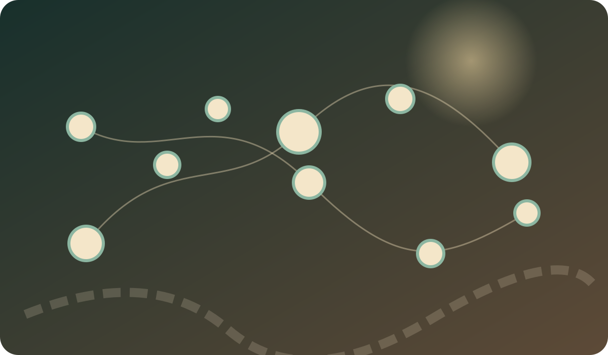
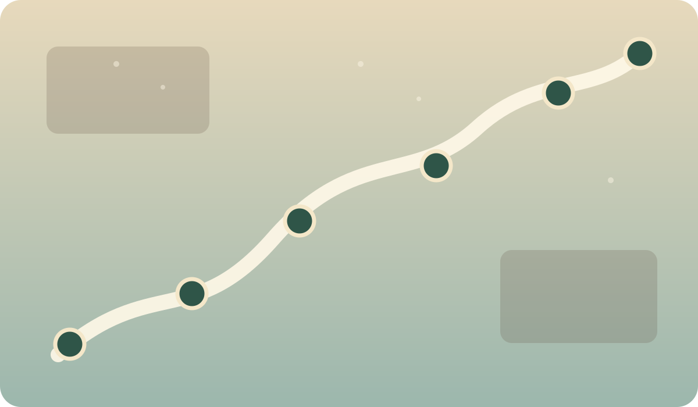

LIFE AREAS
八大人生區域
先從人生經驗出發；同一部電影可以同時長在不同枝幹。

CONNECTION MAP
電影關聯地圖
選一部電影，看它與哪些作品共享人生面向、主題與思想關鍵字。電影不是孤島，而是一座座彼此有暗橋相連的島嶼。
MOVIE COORDINATES
電影座標

THOUGHT UNIVERSE
哲學深如海，廣闊如星雲
不再把電影硬塞進固定的十幾個問題。先走進一個哲學領域，再從母題深入，最後看每部電影自己留下了什麼問題。
核心母題
先選一個思想領域。
電影與問題
電影會在這裡浮出來。
MY CINEMA NOTES
我的電影筆記
這不是影評作業，而是「此刻的我」看完電影後留下的思想痕跡。筆記先存在這台瀏覽器，也可匯出備份。
ADD A MOVIE
新增電影
V7 仍然資料驅動：新增電影不需要碰網站程式。人生面向與思想領域都由資料自動建立連結。